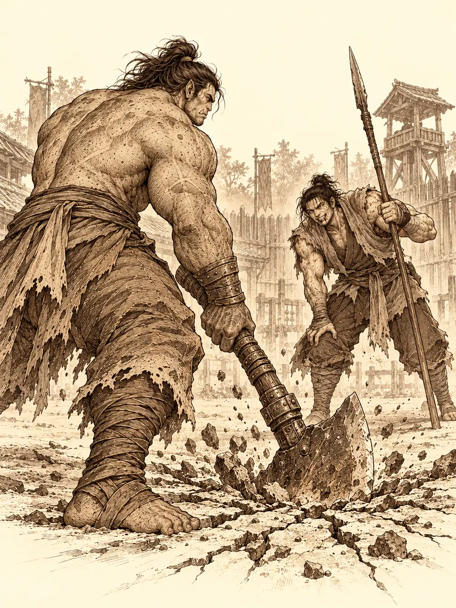

Capítulo 100
Rumores de palacio
Libro VII · La Reina Cuervo
Higeki trabajaba de cocinero en palacio y tenía la oreja en todas partes. Lo que había oído entre fogones le llegó a Calista una tarde, mientras ordenaba los papeles de los cazadores: las mujeres del servicio decían que Rua, la esposa del shogun, se veía con un hombre que no era su marido.
La tritón no se lo creyó ni dejó de creérselo. Sabía lo que podía hacer un rumor así si salía de las cocinas: un golpe al honor del shogunato, un arma en manos de cualquier noble con ganas de morder. Había que averiguar la verdad y, si era mentira, desmentirla antes de que se extendiera. Para eso necesitaba compañía. La compañía que encontró en la base de Sho fueron Banzo, Gur, Palayer y Gelbreak.
El primer problema fue que Banzo y Gur acababan de conocerse. El goliat se quedó mirando a aquel gigante de sangre orca como a una estatua, le tocó los músculos con un dedo y le preguntó si quería pegarse. Gur respondió que sí antes de que terminara la frase. Banzo le rompió una silla en la espalda y Gur, encantado, salió con él al patio. Lo que siguió fue breve. Gur descargó su arma con tanta fuerza que el suelo tembló bajo los pies de todos, y en pocos golpes Banzo quedó en pie solo porque se apoyaba en su lanza, con la boca llena de sangre y una sonrisa a la que le faltaban dientes.
"Ahora me toca a mí", dijo. Y se desmayó de pie.
Gur se arrodilló a su lado con una botella roja.
"Esto a veces me viene bien cuando estoy muy cansado".
Banzo abrió un ojo y lo primero que dijo fue que había ganado. No era verdad, pero los dos se dieron la mano y se prometieron entrenar juntos. Palayer le cerró después las heridas más feas para que pudiera presentarse en palacio sin asustar a nadie.
Calista explicó el asunto varias veces. Primero, Gur preguntó por qué no le preguntaban directamente a Rua. Después, por qué decían que se veía con otros hombres si en la mesa había tres. Gelbreak, apoyado en la pared, se reía sin disimulo. Al final se ofreció a ayudar.
"Gur, es muy fácil. Hay que escuchar a las sirvientas y buscar cosas raras. El que encuentre más pistas será el campeón de la investigación".
"Campeón", repitió Gur, y se le iluminó la cara.
En la entrada de palacio los guardias pidieron las armas. Gur conocía a uno de ellos y pretendió pasar como siempre; le explicaron que aquel día no. Empezó a sacar hachas, una espada, otra hacha más pequeña, y el samurái las fue recogiendo una tras otra mientras Calista le daba conversación para que no parara. Palayer entregó el mayal y el escudo. Gelbreak dijo que no pensaba separarse de su estoque, hasta que Calista le preguntó si prefería volver a la base con la niña. Lo desabrochó.
Rua estaba en el salón con varios nobles, tomando té y hablando de cuentas. Saludó a Gur por su nombre. El shogun estaba en cama, explicó; llevaba tiempo enfermo y los remedios mágicos que habían probado no habían servido de nada. Calista no dijo una palabra del rumor. Se inclinó con toda la etiqueta que les faltaba a sus compañeros y los sacó de allí.
Banzo sacó unos huesos y llamó a uno de sus espíritus, que tomó la forma de un orbe invisible y atravesó las paredes hasta la mesa de Rua. Durante unos instantes oyeron lo que se decía allí: faltaban recursos en algunas zonas, en algunos pueblos no llegaba comida, el esfuerzo del frente del Sur estaba costando caro. Luego el orbe desapareció de golpe, como si alguien lo hubiera borrado. Nadie supo quién.
"Seguramente sea una protección para que nadie pueda espiar", dijo Calista. "Seguimos buscando".
Gur salió corriendo hacia la cocina gritando que iba a ganar, sin saber dónde estaba. Palayer sacó una flauta y ofreció a la sala una danza de su pueblo, una pieza que representaba la caza y las fases de la luna; quiso acompañarla con unas luces mágicas para comprobar si había alguna protección en el salón, y un guardia le pidió con educación que no usara hechizos dentro de palacio. Las apagó. Una de las nobles de la mesa comentó en voz alta que con tanto jaleo era imposible hablar de los problemas del shogunato. Calista se ofreció a ayudar con esos problemas y la noble la miró por encima del hombro. Rua le dijo que siguiera con lo suyo.
La tritón salió al jardín a buscar aire.
Gelbreak la siguió. Ella le sugirió con mucha dulzura que investigara por el otro lado. Él dijo que sí, y al pasar junto al estanque la empujó al agua.
Calista se levantó empapada, con las aletas de punta, y le sonrió. Una ráfaga de viento lanzó al drow al estanque detrás de ella. La tritón salió del agua con toda la dignidad posible, la sacó de su ropa con un gesto, le dio forma de caballito de mar y el caballito le escupió un chorro en plena cara. Ella se fue seca; él se quedó chorreando.
Al rato, Gelbreak la alcanzó para devolverle siete monedas que, dijo, se le habían caído; tenía un agujero en la bolsa. Ella las recuperó y siguió andando. No notó que durante aquel paseo la bolsa se le había quedado mucho más ligera.
En la cocina, Gur había encontrado lo que buscaba. Las dos cocineras le sirvieron un plato enorme, le preguntaron si él era el que se veía con Rua, se rieron de lo tonto que era, y acabaron sentándose encima de él. En el revuelo se cayeron unas estanterías y se rompieron varios tarros. Entre los restos había un ramillete de hojas que ninguna de las dos reconoció.
"Esto no es de cocinar. ¿Qué hace aquí? Nosotras no lo hemos pedido".
Le explicaron que nada entraba en la cocina sin pasar antes por los samuráis. Gur olfateó las hojas y no supo qué eran, pero sí que se trataba de una cosa rara. Salió de la cocina con el ramillete en alto, medio vestido y con marcas de labios por todo el cuerpo, gritando que tenía la primera pista. Calista se dio la vuelta sin mirarlo y le dijo que volviera cuando se hubiera tranquilizado. Gelbreak le quitó las hojas, lo empujó con mucho esfuerzo hasta una sala de baño y lo dejó encerrado. Gur lanzó una bola de fuego contra la pared y las llamas se apagaron al tocar los muros, así que se puso a embestir la puerta, una y otra vez, hasta que Gelbreak le abrió girando el pomo hacia el otro lado. El drow le devolvió el ramillete y Gur se lo entregó a Calista.

La tritón examinó las hojas y se le endureció la cara. No servían para cocinar. Podían servir para ungüentos y medicinas, o para venenos y maldiciones; no recordaba cuál de esas cosas era, ni con qué fin estaban allí.
"Esto no debería estar aquí. Bien hecho, Gur".
Le dio unas palmadas en el brazo, dudando un poco dónde ponía la mano.
Los demás también habían encontrado cosas. Banzo, al pedir a un guardia de la entrada una lista de quienes habían pasado por palacio, le vio en el cuello una marca que no dejaba lugar a dudas. Palayer había preguntado a otro samurái dónde se veían los amantes en palacio, y él la había llevado detrás de unos matorrales junto al estanque. Ella había ido a investigar; luego, puesto que estaba allí y el samurái le gustaba, decidió que también podía disfrutar. En la hierba encontró unas bragas de seda con bordados de oro, demasiado finas para ser de una sirvienta.
Calista fue a hablar con las criadas que limpiaban los salones. Gelbreak se le adelantó, iluminó un dedo de morado ante las dos mujeres y no hizo falta más. Le entregaron una carta que habían encontrado en la sala del té: una declaración de amor, bien escrita, que pedía a alguien que dejara al otro y volviera. Una mancha de tinta tapaba la firma, y del destinatario solo se leía "para mi querida Ru".
Al salir, el drow le habló de las juntas del suelo. ¿No se había fijado en que eran demasiado grandes? Alguien podía caerse por ahí. Calista lo miró sin entender. Y de pronto le dieron miedo las juntas, un miedo tan intenso que se le cerró la garganta y no pudo decir una palabra. Gelbreak le ofreció la mano como un caballero. Ella la tomó, temblando, y él la llevó por los pasillos dando vueltas, arriba y abajo, mientras ella pisaba solo el centro de las tablas con pasos diminutos.
Cuando el efecto pasó, Calista le ordenó que se retirara. Luego se encerró en una habitación, gritó contra una almohada y la golpeó varias veces. Salió peinándose con los dedos, como si no hubiera pasado nada.
Banzo, mientras tanto, había llevado al guardia de la marca hasta la cocina, donde Gur seguía entrenando con las dos cocineras. Gur lo agarró de la armadura, lo acercó y le pidió que hablara. El samurái se derrumbó: si lo contaba les cortarían la cabeza a él y a ella. Era Caterina, una de las ayudantes de palacio. No tenía nada que ver con Rua, lo juraba. Las cocineras, de paso, reconocieron las bragas que había encontrado Palayer: las habían lavado ellas. Eran de Awasaki Soko, que solía ir con su marido por las noches al lado del lago.
Calista encontró en la biblioteca a Nomi, el noble que la había agarrado en el baile. Él insistió en que se sentara a su lado, le puso la mano en el muslo y ella se la apartó con delicadeza. La tritón usó con él un encanto discreto, y desde detrás de la puerta Gelbreak le echó una mano con su voz. Nomi le contó que la base del Sur estaba arruinando los pueblos de alrededor, que él ya lo había advertido, y que Yuichi andaba haciendo muchos regalos a Rua. Era un mujeriego, dijo; ya se sabía lo que buscaba.
Calista se despidió con una advertencia sobre tocar a las damas sin permiso. Cuando salió, el drow le hizo notar con sorna que ella también usaba magia para esas cosas. Ella movió un dedo y lo encogió hasta el tamaño de un dedal.
"Hoy me siento con ganas de crear un poco de caos".
Lo levantó por la ropa para lanzarlo por la puerta. Antes de salir volando, él le gritó una orden, y Calista se quedó bailando en el sitio sin poder parar. Cuando el drow recuperó su tamaño, al cabo de un rato, la soltó. Ella se arregló el vestido, se alisó el pelo y les contó a los demás lo que había averiguado.
Gelbreak se llevó a la esposa de Yuichi a dar un paseo con su encanto más amable, y Calista se sentó con el marido. Le habló de rumores que podían perjudicar a una mujer tan joven, de regalos y de lealtad. Yuichi enrojeció. Sí, los regalos eran suyos, pero su familia servía al linaje del shogun desde hacía generaciones y jamás pondría en duda su honor; quería fortalecerlo. Y pidió que les cortaran la cabeza a quienes difundían esas injurias. Calista le enseñó la carta. Yuichi sonrió al leerla.
"Así que aquí estaba. Es de mi hijo. Le ayudé a escribirla para una muchacha, Ruquita. Se le cayó la tinta encima".
Recuperó el papel para devolvérselo.
Banzo, entre tanto, se había acercado a Rua para distraerla. Le preguntó por su salud, le habló otra vez de servir como escolta. Rua le explicó que todos los samuráis protectores del shogun pasaban unas pruebas y le preguntó si estaba dispuesto.
"Me gustan las pruebas".
Ella se volvió hacia un noble con un dedo levantado.
"Banzo de las Cumbres Nevadas. Apúntalo para la guardia. Recomendación mía".
Se reunieron junto a la puerta. La marca del guardia era de Caterina, las bragas de Awasaki Soko, la carta del hijo de Yuichi para una tal Ruquita, y los regalos, según Yuichi, una muestra de lealtad. Nada probaba que Rua engañara a nadie. Discutieron si contárselo. Gur, sentado en el suelo, borracho y lleno de arañazos que no eran de batalla, propuso esperar a ver si los rumores paraban ahora que Calista había asustado al noble. La tritón abrió los ojos, sorprendida de oír algo sensato. Decidieron observar unos días antes de decirle nada a Rua.
Banzo se cargó a Gur a hombros y, con Palayer, se fueron hacia la taberna a celebrar a gritos lo que había hecho cada uno.
Gelbreak se quedó junto a Calista y le dio un golpe suave con el hombro.
"Me ha parecido curioso que no les hayas contado más de esa planta. Pensaba que los cazadores os lo contabais todo".
"No me fío de conjeturas. Esa planta tiene usos muy oscuros y no es normal que esté en una cocina. Prefiero contárselo a quien pueda aportar algo".
Antes de irse, el drow le enseñó una bolsa que ella conocía muy bien: noventa y tres monedas que le había quitado durante el paseo por el jardín. Calista lo miró fijamente, las aletas le dieron un pequeño respingo, recogió la bolsa y la guardó en otro sitio.
"Tienes las manos bastante largas. Deberías controlarlas".
Se marchó sola hacia la biblioteca de palacio con el ramillete envuelto en un pañuelo. Desde lejos le llegaba todavía, calle abajo, la voz de Gur explicándole a medio Sho que él había sido el campeón de la investigación.